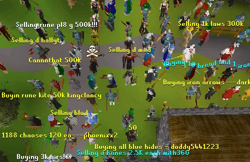
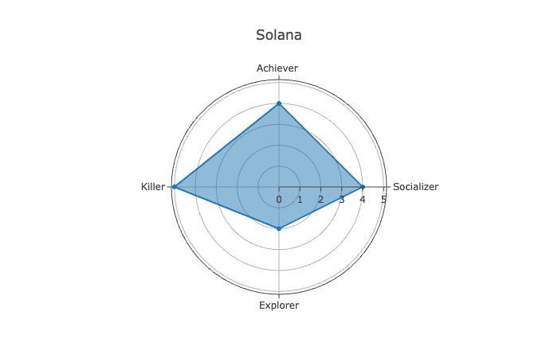
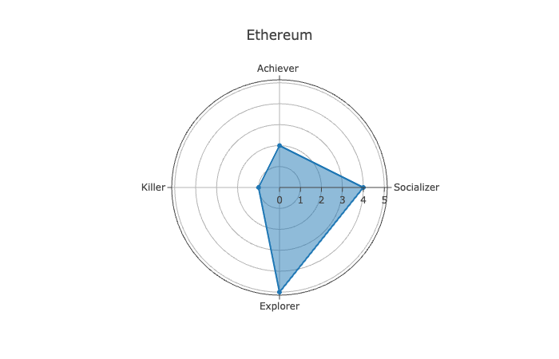

I have often wondered,
Why are some of the biggest names in the crypto space bad actors? What force propels scammers into the zeitgeist?
A game design framework from the 90's has helped me understand.
A bustling online ecosystem
Millions of players are trading, yapping, spreading FUD, and chasing alpha, all interacting across continents in a shared digital space.
In 1996, Richard Bartle created a framework for understanding players in multiplayer games. It is called Bartle’s taxonomy.

Achievers in Web3 are varied, but their primary measure of success is wealth. They grind, optimize, and play the game to maximize returns. They are critical because they represent liquidity. Without them, there is no money moving through the system.
Explorers go deep. They read whitepapers, study documentation, and understand technical layers most ignore. They can explain nuanced protocol differences and operate for the love of the game, not just for financial gain.
Socializers care more about their social metrics than money. They are the communication layer of the ecosystem, distributing valuable information uncovered by explorers.
Killers are extractors, PVP traders, and sometimes founders. They create drama and movement in crypto, ensuring it never becomes predictable or stagnant.
You can use this framework to evaluate online ecosystems. Here is a brief overview of Solana and Ethereum through this lens.
Solana is where most of the achievers have been this cycle. This attracted killers and socializers. The relatively lower number of explorers compared to Ethereum contributed to the success of scammers and extractive behavior in the ecosystem.
Although Ethereum continues to be talked about and discussed, there is a distinct lack of speculative energy compared to previous cycles. It has increasingly become a glorified social club focused on the philosophy of blockchain ethics.
Crypto is dangerous and full of killers; that's what makes it fun. The solution is not to get rid of them, but to breed more explorers. This is just a basic overview—there is a more complicated taxonomy I will dive into in a second article.
Overall, killers are important for excitement, but too many make things boring. We must acknowledge their role and build better systems for all player types.